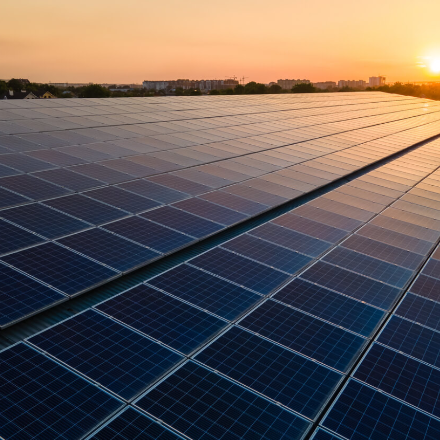

Energia solar
Em um Brasil onde 13 milhões de pessoas ainda vivem sem energia elétrica — a maioria em zonas rurais isoladas —, surge uma inovação radical que transforma sol em soberania: as Comunidades de Energia Solar Compartilhada (CESCs). Mais do que painéis fotovoltaicos em celeiros ou pastos, essas cooperativas representam uma reinvenção econômica, social e ecológica do mundo rural. O conceito é simples, mas revolucionário: agricultores geram energia solar em suas terras, armazenam o excedente em baterias de lítio ou fluxo, e vendem diretamente para consumidores urbanos através de plataformas digitais peer-to-peer (P2P). Imagine uma família de agricultores no semiárido baiano. Em seu terreno antes improdutivo devido à seca, erguem-se fileiras de painéis solares. A radiação inclemente, que antes castigava a terra, agora é convertida em megawatts. Através de um aplicativo como "SolShare", essa energia excedente é ofertada em tempo real para um morador de Salvador, que a compra 30% mais barata que a tarifa das concessionárias. Enquanto isso, sensores IoT monitoram a produção, e smart grids (redes inteligentes) redistribuem os elétrons sem perdas. O agricultor deixa de ser apenas produtor de alimentos para tornar-se "agroenergetizador" — um neologismo que sintetiza seu novo papel na cadeia produtiva. Os impactos são sistêmicos. No campo, a venda de energia solar cria uma renda complementar vital em períodos de estiagem ou quebra de safra. Projetos como o "Sol do Sertão" (Feira de Santana/BA) mostram que 20 pequenas propriedades rurais podem abastecer 600 residências urbanas, gerando R$ 2.800/mês por família agricultora — recurso reinvestido em irrigação por gotejamento ou sementes adaptadas ao clima. Jovens que migrariam para as cidades passam a gerir microusinas solares, dominando softwares de gestão energética. Nas cidades, consumidores conscientes financiam diretamente a transição energética justa, reduzindo sua pegada de carbono e pressionando o sistema tradicional. Tecnicamente, o modelo é uma obra-prima de eficiência. Biodigestores integrados convertem esterco animal em biometano, complementando a geração solar à noite. Baterias de segunda vida (reaproveitadas de carros elétricos) armazenam energia a custos reduzidos. E a Lei 14.300/2022 — marco legal da geração distribuída — assegura que cooperativas rurais possam vender energia sem burocracias estratosféricas. Ainda assim, desafios persistem: o custo inicial de instalação (embora caia 12% ao ano) ainda exige linhas de crédito verdes, como as do BNDES, e a desigualdade digital demanda parcerias com ONGs para capacitação técnica. Mas o verdadeiro milagre é invisível aos olhos: quando uma senhora em São Paulo liga seu ventilador com energia comprada do Seu José, agricultor de Curaçá (BA), cria-se um vínculo ético. Ela passa a entender que por trás daquele elétron há um homem que enfrentou secas, pragas e logística cruel para alimentá-la. A CESC rompe a barreira da desinformação campo-cidade, transformando kWh em pontes de empatia. Olhando para o futuro, o potencial é astronômico. O Brasil tem 83 mil hectares de terras degradadas aptas para usinas solares — área que poderia gerar 124 GW, o suficiente para abastecer 100 milhões de lares. Projetos-piloto no Cerrado já acoplam painéis solares acima de cultivos de feijão ("agrofotovoltaica"), onde a sombra controlada aumenta a produtividade agrícola em 15% enquanto gera energia. E quando falamos de periferias urbanas, as CESCs permitem que favelas tenham microrredes autônomas, alimentadas por cooperativas rurais vizinhas — um antídoto contra apagões e tarifas abusivas. Este é um texto descritivo que aparece abaixo da imagem. Você pode personalizar este texto para descrever a imagem ou adicionar qualquer informação relevante. Esta é a essência da revolução: não se trata apenas de luz, mas de reparação histórica. O campo, por séculos visto como atrasado, converte-se em vanguarda energética. A cidade, consumidora passiva, torna-se corresponsável pelo ciclo sustentável. E em um planeta em colapso climático, essas comunidades provam que o sol é mais que uma estrela — é a semente de um novo pacto social, onde quem cultiva a terra também cultiva elétrons, e ambos alimentam o mundo.